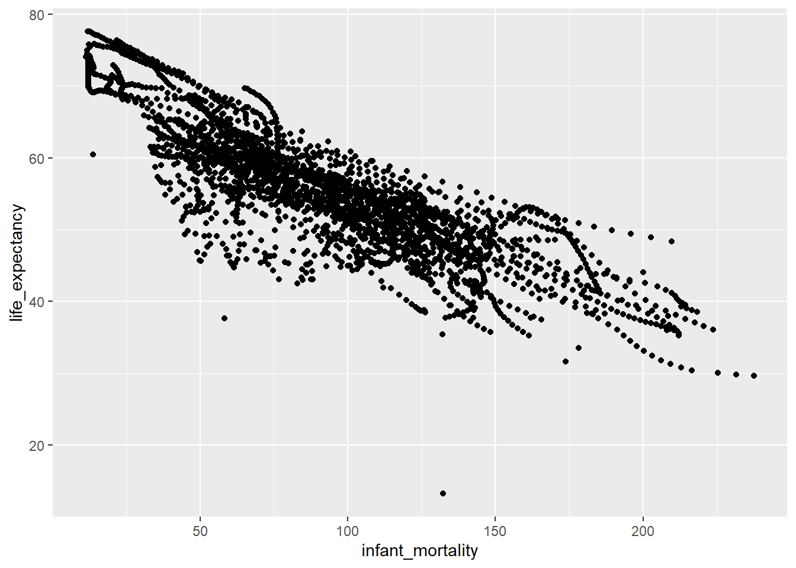
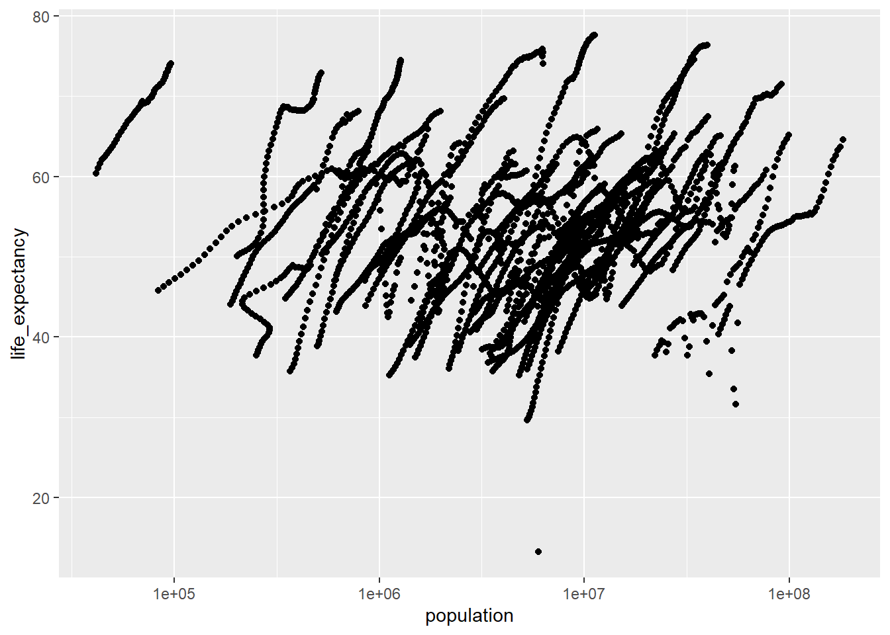
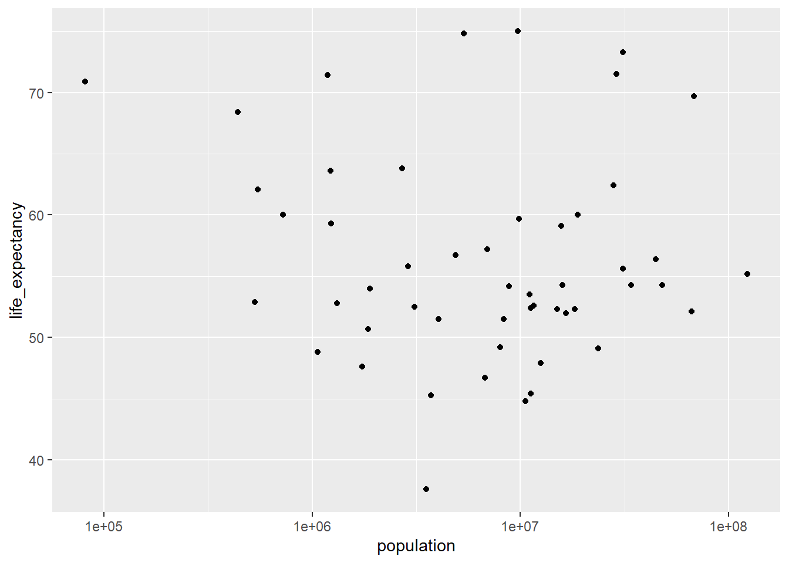

library("dslabs")Warning: package 'dslabs' was built under R version 4.2.2library(ggplot2)Warning: package 'ggplot2' was built under R version 4.2.2library(here)here() starts at C:/Data/GitHub/MADA23/betelihemgetachew-MADA-portfolio2Placeholder file for the future R coding exercise.
#Required packages and datasets uploaded here at the begining of the code
library("dslabs")Warning: package 'dslabs' was built under R version 4.2.2library(ggplot2)Warning: package 'ggplot2' was built under R version 4.2.2library(here)here() starts at C:/Data/GitHub/MADA23/betelihemgetachew-MADA-portfolio2#get discription, usage format and details fo the gapfinder dataset below
help(gapminder)starting httpd help server ... done#using the str command for a first look a the data
str(gapminder)'data.frame': 10545 obs. of 9 variables:
$ country : Factor w/ 185 levels "Albania","Algeria",..: 1 2 3 4 5 6 7 8 9 10 ...
$ year : int 1960 1960 1960 1960 1960 1960 1960 1960 1960 1960 ...
$ infant_mortality: num 115.4 148.2 208 NA 59.9 ...
$ life_expectancy : num 62.9 47.5 36 63 65.4 ...
$ fertility : num 6.19 7.65 7.32 4.43 3.11 4.55 4.82 3.45 2.7 5.57 ...
$ population : num 1636054 11124892 5270844 54681 20619075 ...
$ gdp : num NA 1.38e+10 NA NA 1.08e+11 ...
$ continent : Factor w/ 5 levels "Africa","Americas",..: 4 1 1 2 2 3 2 5 4 3 ...
$ region : Factor w/ 22 levels "Australia and New Zealand",..: 19 11 10 2 15 21 2 1 22 21 ...#use the summary command to get some basic stats on the data
summary(gapminder) country year infant_mortality life_expectancy
Albania : 57 Min. :1960 Min. : 1.50 Min. :13.20
Algeria : 57 1st Qu.:1974 1st Qu.: 16.00 1st Qu.:57.50
Angola : 57 Median :1988 Median : 41.50 Median :67.54
Antigua and Barbuda: 57 Mean :1988 Mean : 55.31 Mean :64.81
Argentina : 57 3rd Qu.:2002 3rd Qu.: 85.10 3rd Qu.:73.00
Armenia : 57 Max. :2016 Max. :276.90 Max. :83.90
(Other) :10203 NA's :1453
fertility population gdp continent
Min. :0.840 Min. :3.124e+04 Min. :4.040e+07 Africa :2907
1st Qu.:2.200 1st Qu.:1.333e+06 1st Qu.:1.846e+09 Americas:2052
Median :3.750 Median :5.009e+06 Median :7.794e+09 Asia :2679
Mean :4.084 Mean :2.701e+07 Mean :1.480e+11 Europe :2223
3rd Qu.:6.000 3rd Qu.:1.523e+07 3rd Qu.:5.540e+10 Oceania : 684
Max. :9.220 Max. :1.376e+09 Max. :1.174e+13
NA's :187 NA's :185 NA's :2972
region
Western Asia :1026
Eastern Africa : 912
Western Africa : 912
Caribbean : 741
South America : 684
Southern Europe: 684
(Other) :5586 class(gapminder)[1] "data.frame"#select countries only in the continient Africa, check number of observations and variables
africadata <- subset(gapminder, continent == "Africa")
dim(africadata)[1] 2907 9str(africadata)'data.frame': 2907 obs. of 9 variables:
$ country : Factor w/ 185 levels "Albania","Algeria",..: 2 3 18 22 26 27 29 31 32 33 ...
$ year : int 1960 1960 1960 1960 1960 1960 1960 1960 1960 1960 ...
$ infant_mortality: num 148 208 187 116 161 ...
$ life_expectancy : num 47.5 36 38.3 50.3 35.2 ...
$ fertility : num 7.65 7.32 6.28 6.62 6.29 6.95 5.65 6.89 5.84 6.25 ...
$ population : num 11124892 5270844 2431620 524029 4829291 ...
$ gdp : num 1.38e+10 NA 6.22e+08 1.24e+08 5.97e+08 ...
$ continent : Factor w/ 5 levels "Africa","Americas",..: 1 1 1 1 1 1 1 1 1 1 ...
$ region : Factor w/ 22 levels "Australia and New Zealand",..: 11 10 20 17 20 5 10 20 10 10 ...#run a summary command to see basic stats, number of observations for each
summary(africadata) country year infant_mortality life_expectancy
Algeria : 57 Min. :1960 Min. : 11.40 Min. :13.20
Angola : 57 1st Qu.:1974 1st Qu.: 62.20 1st Qu.:48.23
Benin : 57 Median :1988 Median : 93.40 Median :53.98
Botswana : 57 Mean :1988 Mean : 95.12 Mean :54.38
Burkina Faso: 57 3rd Qu.:2002 3rd Qu.:124.70 3rd Qu.:60.10
Burundi : 57 Max. :2016 Max. :237.40 Max. :77.60
(Other) :2565 NA's :226
fertility population gdp continent
Min. :1.500 Min. : 41538 Min. :4.659e+07 Africa :2907
1st Qu.:5.160 1st Qu.: 1605232 1st Qu.:8.373e+08 Americas: 0
Median :6.160 Median : 5570982 Median :2.448e+09 Asia : 0
Mean :5.851 Mean : 12235961 Mean :9.346e+09 Europe : 0
3rd Qu.:6.860 3rd Qu.: 13888152 3rd Qu.:6.552e+09 Oceania : 0
Max. :8.450 Max. :182201962 Max. :1.935e+11
NA's :51 NA's :51 NA's :637
region
Eastern Africa :912
Western Africa :912
Middle Africa :456
Northern Africa :342
Southern Africa :285
Australia and New Zealand: 0
(Other) : 0 #here create a subset of the africadata including only infant mortality and life expectancy
africadata_mor<- africadata[,c("infant_mortality","life_expectancy")] #here create a subset of the afrcadata including only popuation and life expectancy
africadata_ppln<- africadata[,c("population","life_expectancy")] #check structure of new dataset and number of observations of the two new datasets created africadata_mor and africadata_ppln using the comands str for strucutre and summary
str(africadata_mor)'data.frame': 2907 obs. of 2 variables:
$ infant_mortality: num 148 208 187 116 161 ...
$ life_expectancy : num 47.5 36 38.3 50.3 35.2 ...summary(africadata_mor) infant_mortality life_expectancy
Min. : 11.40 Min. :13.20
1st Qu.: 62.20 1st Qu.:48.23
Median : 93.40 Median :53.98
Mean : 95.12 Mean :54.38
3rd Qu.:124.70 3rd Qu.:60.10
Max. :237.40 Max. :77.60
NA's :226 str(africadata_ppln)'data.frame': 2907 obs. of 2 variables:
$ population : num 11124892 5270844 2431620 524029 4829291 ...
$ life_expectancy: num 47.5 36 38.3 50.3 35.2 ...summary(africadata_ppln) population life_expectancy
Min. : 41538 Min. :13.20
1st Qu.: 1605232 1st Qu.:48.23
Median : 5570982 Median :53.98
Mean : 12235961 Mean :54.38
3rd Qu.: 13888152 3rd Qu.:60.10
Max. :182201962 Max. :77.60
NA's :51 ggplot(data=africadata_mor,aes(x=infant_mortality,y=life_expectancy) )+geom_point(lineend="butt", linejoin="round", linemitre=1)Warning in geom_point(lineend = "butt", linejoin = "round", linemitre = 1):
Ignoring unknown parameters: `lineend`, `linejoin`, and `linemitre`Warning: Removed 226 rows containing missing values (`geom_point()`).
#plot life expectancy as a function of population size, the scale_X_log10 command adds a third layer to the graph
ggplot(data=africadata_ppln,aes(x=population,y=life_expectancy))+geom_point(lineend="butt", linejoin="round", linemitre=1) + scale_x_log10("population")Warning in geom_point(lineend = "butt", linejoin = "round", linemitre = 1):
Ignoring unknown parameters: `lineend`, `linejoin`, and `linemitre`Warning: Removed 51 rows containing missing values (`geom_point()`).
africadata_filtered <-africadata[is.na( africadata$infant_mortality),]
africadata_unique <- unique(africadata_filtered$year)#since the filtered dataset is an object, print it here to see the results showing the years with missing data for mortality
print(africadata_unique) [1] 1960 1961 1962 1963 1964 1965 1966 1967 1968 1969 1970 1971 1972 1973 1974
[16] 1975 1976 1977 1978 1979 1980 1981 2016#create here a new object with a subset of the data that includes only the year 2000
africadata_2000 <- subset(africadata, year == 2000)
dim(africadata_2000)[1] 51 9#check the expected observation numbers, stucture and summary of the new object created
str(africadata_2000)'data.frame': 51 obs. of 9 variables:
$ country : Factor w/ 185 levels "Albania","Algeria",..: 2 3 18 22 26 27 29 31 32 33 ...
$ year : int 2000 2000 2000 2000 2000 2000 2000 2000 2000 2000 ...
$ infant_mortality: num 33.9 128.3 89.3 52.4 96.2 ...
$ life_expectancy : num 73.3 52.3 57.2 47.6 52.6 46.7 54.3 68.4 45.3 51.5 ...
$ fertility : num 2.51 6.84 5.98 3.41 6.59 7.06 5.62 3.7 5.45 7.35 ...
$ population : num 31183658 15058638 6949366 1736579 11607944 ...
$ gdp : num 5.48e+10 9.13e+09 2.25e+09 5.63e+09 2.61e+09 ...
$ continent : Factor w/ 5 levels "Africa","Americas",..: 1 1 1 1 1 1 1 1 1 1 ...
$ region : Factor w/ 22 levels "Australia and New Zealand",..: 11 10 20 17 20 5 10 20 10 10 ...summary(africadata_2000) country year infant_mortality life_expectancy
Algeria : 1 Min. :2000 Min. : 12.30 Min. :37.60
Angola : 1 1st Qu.:2000 1st Qu.: 60.80 1st Qu.:51.75
Benin : 1 Median :2000 Median : 80.30 Median :54.30
Botswana : 1 Mean :2000 Mean : 78.93 Mean :56.36
Burkina Faso: 1 3rd Qu.:2000 3rd Qu.:103.30 3rd Qu.:60.00
Burundi : 1 Max. :2000 Max. :143.30 Max. :75.00
(Other) :45
fertility population gdp continent
Min. :1.990 Min. : 81154 Min. :2.019e+08 Africa :51
1st Qu.:4.150 1st Qu.: 2304687 1st Qu.:1.274e+09 Americas: 0
Median :5.550 Median : 8799165 Median :3.238e+09 Asia : 0
Mean :5.156 Mean : 15659800 Mean :1.155e+10 Europe : 0
3rd Qu.:5.960 3rd Qu.: 17391242 3rd Qu.:8.654e+09 Oceania : 0
Max. :7.730 Max. :122876723 Max. :1.329e+11
region
Eastern Africa :16
Western Africa :16
Middle Africa : 8
Northern Africa : 6
Southern Africa : 5
Australia and New Zealand: 0
(Other) : 0 #plot to see correlations between infant mortality and life expectancy
ggplot(data=africadata_2000,aes(x=infant_mortality,y=life_expectancy) )+geom_point(lineend="butt", linejoin="round", linemitre=1)Warning in geom_point(lineend = "butt", linejoin = "round", linemitre = 1):
Ignoring unknown parameters: `lineend`, `linejoin`, and `linemitre`
#plot to see correlations between infant mortality and life expectancy
ggplot(data=africadata_2000,aes(x=population,y=life_expectancy))+geom_point(lineend="butt", linejoin="round", linemitre=1) + scale_x_log10("population")Warning in geom_point(lineend = "butt", linejoin = "round", linemitre = 1):
Ignoring unknown parameters: `lineend`, `linejoin`, and `linemitre`
#conduct a linear model life expectancy as outcome and infant mortality as the predictor. Use dataset subset created with the year 2000 only
fit1 <- lm(infant_mortality ~ life_expectancy, data=africadata_2000)#check your model fit
summary(fit1)
Call:
lm(formula = infant_mortality ~ life_expectancy, data = africadata_2000)
Residuals:
Min 1Q Median 3Q Max
-67.262 -9.806 -1.891 12.460 52.285
Coefficients:
Estimate Std. Error t value Pr(>|t|)
(Intercept) 219.0135 21.4781 10.197 1.05e-13 ***
life_expectancy -2.4854 0.3769 -6.594 2.83e-08 ***
---
Signif. codes: 0 '***' 0.001 '**' 0.01 '*' 0.05 '.' 0.1 ' ' 1
Residual standard error: 22.55 on 49 degrees of freedom
Multiple R-squared: 0.4701, Adjusted R-squared: 0.4593
F-statistic: 43.48 on 1 and 49 DF, p-value: 2.826e-08#conduct a linear model population as outcome and infant mortality as the predictor. Use dataset subset created with the year 2000 only
fit2 <- lm(infant_mortality ~ population, data=africadata_2000)#check your model fit
summary(fit2)
Call:
lm(formula = infant_mortality ~ population, data = africadata_2000)
Residuals:
Min 1Q Median 3Q Max
-65.261 -17.358 2.083 24.212 65.390
Coefficients:
Estimate Std. Error t value Pr(>|t|)
(Intercept) 7.755e+01 5.325e+00 14.565 <2e-16 ***
population 8.786e-08 1.980e-07 0.444 0.659
---
Signif. codes: 0 '***' 0.001 '**' 0.01 '*' 0.05 '.' 0.1 ' ' 1
Residual standard error: 30.92 on 49 degrees of freedom
Multiple R-squared: 0.004003, Adjusted R-squared: -0.01632
F-statistic: 0.1969 on 1 and 49 DF, p-value: 0.6592#for your first model #use tidy broom function to save your model
fittable1 <- broom::tidy(fit1)#check to see what your model looks like
print(fittable1)# A tibble: 2 × 5
term estimate std.error statistic p.value
<chr> <dbl> <dbl> <dbl> <dbl>
1 (Intercept) 219. 21.5 10.2 1.05e-13
2 life_expectancy -2.49 0.377 -6.59 2.83e- 8#save your model as an object on your working directory using the here function
table_file1 = here("results", "resulttable1.rds")
saveRDS(fittable1, file = table_file1)#for your second model
fittable2 <- broom::tidy(fit2)#check to see what your model looks like
print(fittable2)# A tibble: 2 × 5
term estimate std.error statistic p.value
<chr> <dbl> <dbl> <dbl> <dbl>
1 (Intercept) 77.6 5.32 14.6 1.97e-19
2 population 0.0000000879 0.000000198 0.444 6.59e- 1#save your model as an object on your working directory using the here function
table_file2 = here("results", "resulttable2.rds")
saveRDS(fittable2, file = table_file2)